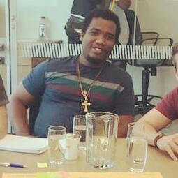

31 anos, casado, natural de Franca-SP
Pregue o Evangelho em todo tempo.
Se necessário, use palavras.
(São Francisco de Assis)
Sou casado desde 2012 e tenho dois filhos (Nicolas de 9 anos e Maria Alice de 6 anos).
Levo os princípios morais, éticose e religiosos bem a sérios. Meus melhores amigos são meus irmãos.
Profissionalmente já estive em várias áreas como serralheria,porteiro, mecânico de manutenção de máquinas industriais e máquinas pesadas, entre outros. Trabalho na área de programação de microcontroladores há 10 anos e atualmente tenho participação societária de uma empresade agrotecnologia onde também trabalho na parte dedesenvolvimento.